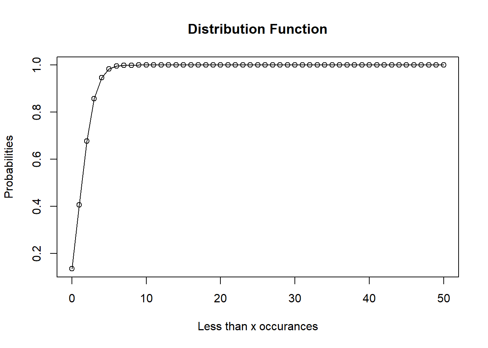
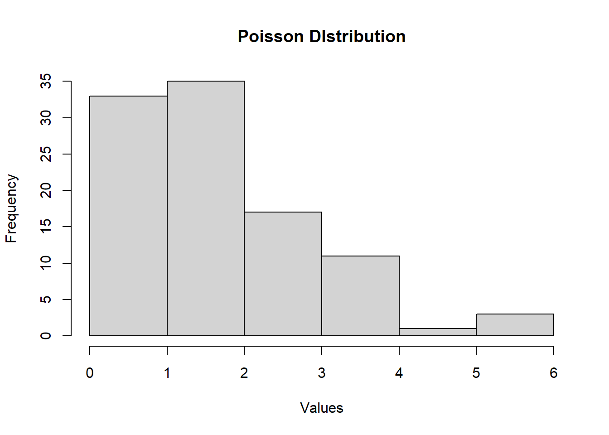

STANDARD PROBABILITY DISTRIBUTION
In this chapter we will learn about some standard probability distributions and how to generate random samples from them.
We will consider the following distributions
- Binomial Distribution
- Poisson Distribution
- Normal Distribution
In R we use the following syntax while dealing with a distribution
- r : Generate a random sample
- d : Generate probability density function i.e. P(X=x)
- p : Generate cumulative distribution function (cdf) i.e. \(P(X\le x)\)
- q : Generate quantile i.e. F(x) ≥ p
Binomial Distribution
The Binomial distribution has the following probability function.
\[ P(X=x)={}^nC_x p^x q^{n-x} \] \[x=0,1,2,3,...,n ; q=1-p\] Here n and p are the parameters of the distribution. n is the size or number of times any experiment is repeated and p is the probability of success.
Note: Binomial distribution is applicable only when the experiment or information under consideration can result in two distinct outcomes. Say, Pass and Fail, Dead or alive etc.
R has four in-built functions to generate binomial distribution. They are described below.
dbinom(x, size, prob)
pbinom(x, size, prob)
qbinom(p, size, prob)
rbinom(n, size, prob)Following is the description of the parameters used −
x is a vector of numbers.
p is a vector of probabilities.
n is number of observations.
size is the number of trials.
prob is the probability of success of each trial.
Density of Binomial Distribution dbinom()
This function gives the probability density distribution at each point.
# Create a sample of 30 numbers
# which are incremented by 1.
x <- seq(0, 30, by = 1)
# Create the binomial distribution.
y <- dbinom(x, 30, 0.5)
# Plot the graph for this sample.
plot(
x,
y,
main = "Density of Binomial Distribution",
ylab = "Probabilities",
xlab = "Number of Successes",
type = "o"
)
Distribution Function pbinom()
This function gives the cumulative probability of an event. It is a single value representing the probability.
[1] 0.5561376x = seq(0, 50, 1)
y = pbinom(x, 50, 0.5)
plot(
x,
y,
main = "Distribution Function",
ylab = "Probabilities",
xlab = "Less than x successes",
type = "o"
)
qbinom()
This function takes the probability value and gives a number whose cumulative value matches the probability value.
# How many heads will have a probability
# of 0.25 will come out when a coin
# is tossed 51 times.
x <- qbinom(0.25, 51, 1 / 2)
x[1] 23Random Sample from Binomial Distribution rbinom()
This function generates required number of random values of given probability from a given sample.
[1] 62 49 59 57 60 58 60 68 59 62 55 55 60 66 63 70 65 59
[19] 59 62Example
Let us consider the following example-
A coin is tossed 20 times. What is the probability that you will get 10 heads? Assuming the coin is fair.
Solution:
Let us consider getting a head as success. Here, n=20 and since the coin is fair, hence p= Probability of getting a head is 1/2 = 0.5
Now, we need to find out
\[P(\text{10 successes}) = {}^{20}C_{10} (0.5)^{10}(1-0.5)^{(20-10)}\] This can be done using the following R program
[1] 0.1761971Hence from calculation we see that the probability of 10 successes is 0.1761971.
If we are interested in getting the probability of getting at less than 10 successes, then we can use pbinom
[1] 0.5880985Now let us try to generate a random sample from the above example.
[1] 9 11 9 10 12 7 13 9 12 9 9 10 13 12 9 12 14 10
[19] 11 9 9 12 8 11 7 8 8 8 7 11Poisson Distribution
\[ P(X=x) = \dfrac{e^{-\lambda}\lambda^x}{x!} \\ x=0,1,2,...\] Here, \(\lambda\) is the parameter of the distribution.
R has four in-built functions to generate Poisson distribution. They are described below.
dpois(x, lambda)
ppois(q, lambda)
qpois(p, lambda)
rpois(n, lambda)Following is the description of the parameters used −
- x vector of (non-negative integer) quantiles.
- q vector of quantiles.
- p vector of probabilities.
- n number of random values to return.
- lambda vector of (non-negative) means.
Density of Poisson Distribution dpois()
This function gives the probability density distribution at each point.
# Create a sample of 30 numbers
# which are incremented by 1.
x <- seq(0, 30, by = 1)
# Create the binomial distribution.
y <- dpois(x, 2)
# Plot the graph for this sample.
plot(
x,
y,
main = "Density of Poisson Distribution",
ylab = "Probabilities",
xlab = "Number of events",
type = "o"
)
Distribution Function of Poisson Distribution ppois()
This function gives the cumulative probability of an event. It is a single value representing the probability.
[1] 0.9834364x = seq(0, 50, 1)
y = ppois(x, 2)
plot(
x,
y,
main = "Distribution Function",
ylab = "Probabilities",
xlab = "Less than x occurances",
type = "o"
)
qpois()
This function takes the probability value and gives a number whose cumulative value matches the probability value.
[1] 2Random Sample from Poisson Distribution
This function is used to generate random numbers whose distribution is normal. It takes the sample size as input and generates that many random numbers. We draw a histogram to show the distribution of the generated numbers.
# Create a sample of 100 numbers
# which are Poisson distributed.
y <- rpois(100, lambda = 2)
# Plot the histogram for this sample.
hist(y, main = "Poisson DIstribution",
xlab = "Values")
Example
Let us consider the following example
The number of misprints per page in a book of 300 pages follows Poisson distribution with parameter 2. Find the probability of getting exacty 4 misprints in a page. Also find out the probability of getting less than 5 misprints.
Solution:
Given,
\(\lambda\) = 2 We are to find \(P(X=4) = \dfrac{e^{-2}2^4}{4!}\)
This can be done in R as
[1] 0.09022352[1] 0.9834364A random sample from Poisson distribution can be generated using the syntax
rpois(size= ,lambda= )For example let us generate a random sample of size 30 from a Poisson population with parameter 2
[1] 4 1 2 0 3 1 3 1 1 2 1 1 2 2 0 1 3 5 0 3 5 3 1 2 5 5 1 1
[29] 1 1Normal Distribution
The normal distribution has the following probability function:
\[f(x)=\dfrac{1}{\sigma\sqrt{2\pi}}e^{-\dfrac{(x-\mu)^2}{2\sigma^2}} \\ -\infty<x,\mu<\infty\\ \sigma^2 \ge 0 \]
Here, \(\mu\) and \(\sigma\) are the parameters of the distribution. \(\mu\) is the mean, and \(\sigma\) is the standard deviation of the distribution.
In a random collection of data from independent sources, it is generally observed that the distribution of data is normal. Which means, on plotting a graph with the value of the variable in the horizontal axis and the count of the values in the vertical axis we get a bell shape curve. The center of the curve represents the mean of the data set. In the graph, fifty percent of values lie to the left of the mean and the other fifty percent lie to the right of the graph. This is referred as normal distribution in statistics.
R has four in built functions to generate normal distribution. They are described below.
dnorm(x, mean, sd)
pnorm(x, mean, sd)
qnorm(p, mean, sd)
rnorm(n, mean, sd)Following is the description of the parameters used in above functions −
x is a vector of numbers.
p is a vector of probabilities.
n is number of observations(sample size).
mean is the mean value of the sample data. It’s default value is zero.
sd is the standard deviation. It’s default value is 1.
Density of Normal Distribution dnorm()
This function gives height of the probability distribution at each point for a given mean and standard deviation.
# Create a sequence of numbers between
# -10 and 10 increasing by 0.1.
x <- seq(-10, 10, by = .1)
# Choose the mean as 2.5 and standard
# deviation as 0.5.
y <- dnorm(x, mean = 0, sd = 2)
# Plot the density curve
plot(
x,
y,
main = "Density curve for normal distribution",
xlab = "Values",
ylab = "Probability",
type = "h"
)
Cumulative Distribution Function of Normal Distribution pnorm()
This function gives the probability of a normally distributed random number to be less that the value of a given number. It is also called “Cumulative Distribution Function”.
# Create a sequence of numbers between
# -10 and 10 increasing by 0.2.
x <- seq(-10, 10, by = .2)
# Choose the mean as 2.5 and standard
# deviation as 2.
y <- pnorm(x, mean = 2.5, sd = 2)
# Plot the graph.
plot(
x,
y,
main = "Distribution curve for normal distribution",
xlab = "Values",
ylab = "Probabilities",
type = "o"
)
Area Under Normal Curve qnorm()
This function takes the probability value and gives a number whose cumulative value matches the probability value. It gives the area under normal curve.
Random Sample from Normal Distribution rnorm()
This function is used to generate random numbers whose distribution is normal. It takes the sample size as input and generates that many random numbers. We draw a histogram to show the distribution of the generated numbers.